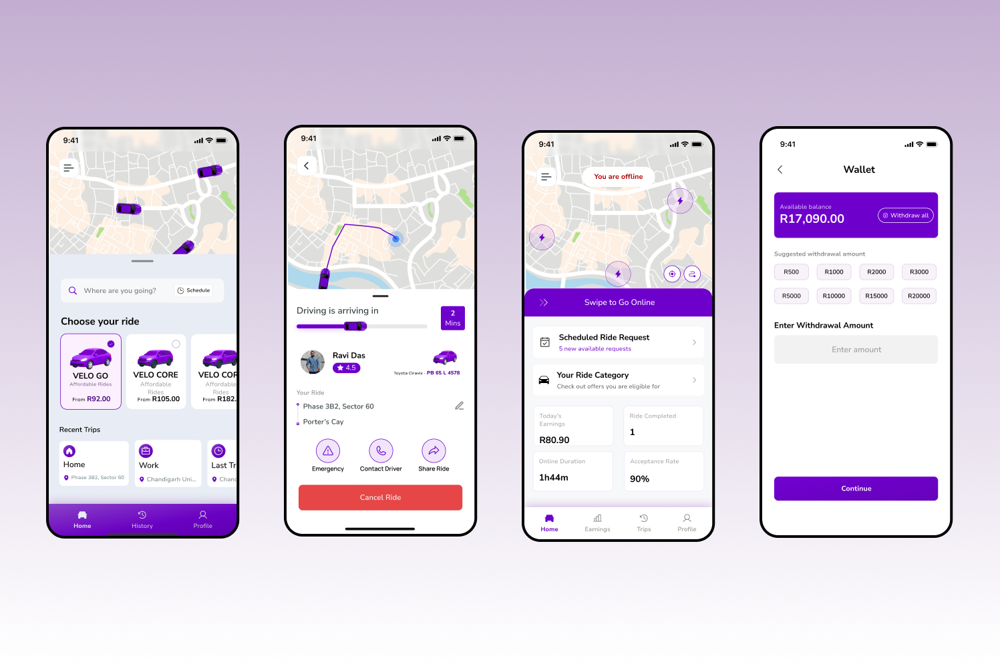
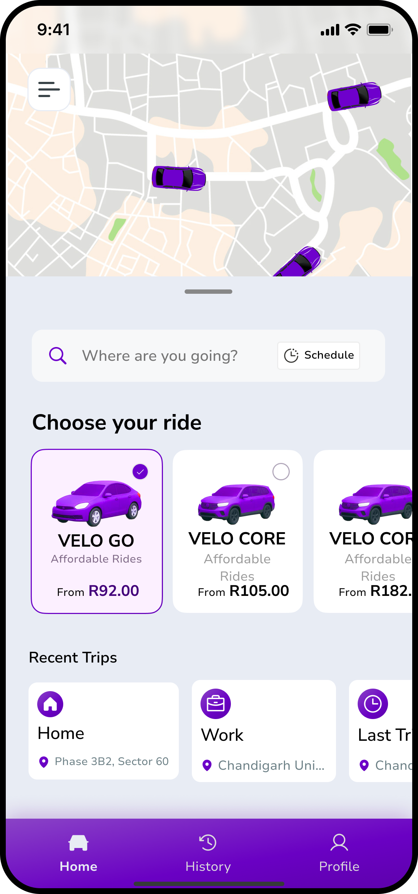
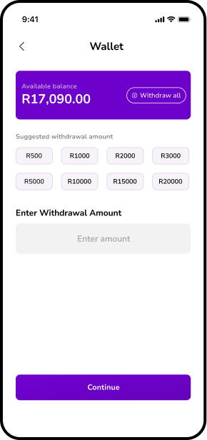
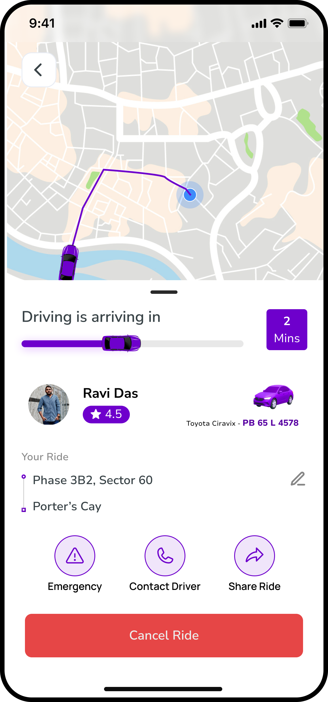
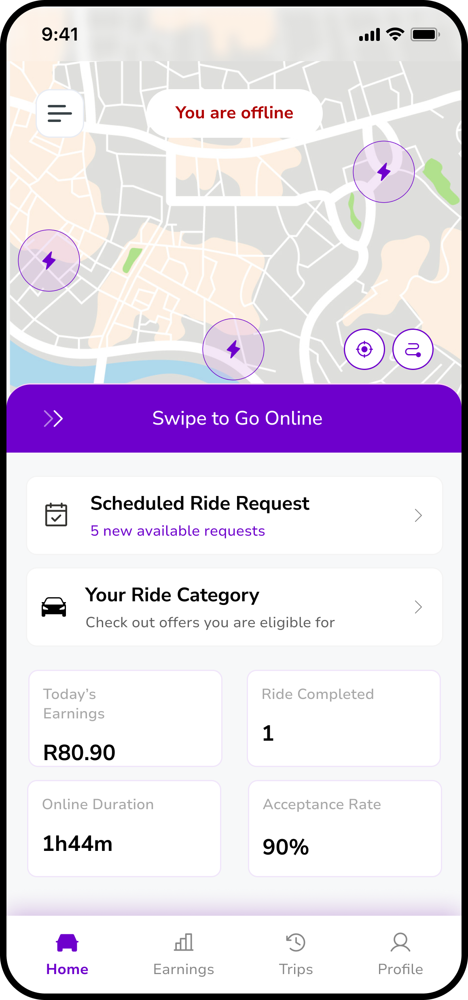

Fixed pricing. Seamless payments. Accountability through ratings. A rideshare app designed for transparency and choice.

Current rideshare apps create anxiety and friction through unpredictable surge pricing, complicated payment processes, and lack of accountability. Users never know the final cost until it's too late, payments require multiple taps and card re-entry, and bad service from either drivers or riders goes largely unaddressed.
Riders deal with surge pricing that can triple costs during peak times, payment failures that delay trips, limited car options (can't choose based on budget or preference), and drivers who provide poor service with no consequences. Drivers face unclear earnings, delayed payments, and difficult riders with no compensation for their time.
The core insight: Rideshare shouldn't be stressful. Fixed pricing, frictionless payments, and mutual accountability create a better experience for everyone.
I talked to regular rideshare users to understand their frustrations and what would make the experience better:
This research shaped the core features: fixed pricing across 5 clear tiers, wallet-first payment system, and an innovative rating compensation model where bad service costs money.
Velo is a rideshare platform built on three core principles: transparent pricing, frictionless payments, and mutual accountability. Users get predictability, drivers get fair earnings, and both sides have incentives for good behavior.
Choose by budget OR car preference: VELO GO, VELO CORE (standard sedan), VELO CORE XL (larger cars), VELO BLACK (premium SUVs), VELO BLACK XL (premium large SUVs). Price and car type shown upfront—no guessing.
No surge pricing, ever. The price you see is the price you pay. During peak times, everyone pays the same fixed rate. This removes anxiety and builds trust—users can budget without surprises.
Pre-load your wallet, rides deduct automatically. No card re-entry, no payment failures, no delays. Top-up via bank transfer, mobile money, or card. Drivers can withdraw anytime with multiple payout options.
Bad drivers compensate riders with a percentage of the ride fee. Bad riders pay drivers extra. This creates real accountability—both sides have skin in the game. Good service is rewarded, poor service has consequences.
Book rides in advance with calendar picker and time selection. Perfect for airport trips, appointments, or early mornings. Confirmation shows pickup time, driver details, and fixed price—no last-minute surprises.
Switch seamlessly between riding and driving. Driver dashboard shows earnings breakdown (ride fees, tips, bonuses, rebates), acceptance rate (90%), and online duration. Transparent earnings = trust.
I mapped two core journeys: (1) Rider: Book → Pay → Track → Complete, and (2) Driver: Accept → Navigate → Complete → Earn. The wallet needed to work seamlessly for both flows, and the rating system had to feel fair, not punitive. Key insight: Payment friction kills conversion, so wallet-first design became non-negotiable.
I designed a clean, modern interface with a pink/purple gradient palette (energy + premium feel), card-based ride tier selection with large prices and car images, wallet balance prominently displayed on every screen, and driver earnings dashboard with transparent breakdown. Created interactive prototypes to test the booking flow, wallet top-up process, and scheduled ride creation.

The ride selection screen displays all 5 tiers in a clear card layout: VELO GO (From R92.00 - "Affordable Rides"), VELO CORE (From R105.00), VELO CORE XL (From R182.00 - "Spacious rides"), VELO BLACK (premium SUVs), and VELO BLACK XL (premium large SUVs). Each card shows the car type illustration, price range, category label, and estimated wait time ("4 mins away"). Users can instantly compare options and choose based on budget or vehicle preference. The "From R__" pricing makes it clear these are fixed starting rates, not surge-inflated costs.

The wallet screen shows the available balance prominently (R17,090.00 with "Withdraw all" option). Users can top-up using multiple methods displayed as cards: Bank Transfer, Mobile Money, or Paypal. The withdrawal flow includes suggested amounts (R500, R1000, R2000, R3000, R5000, R10000, R15000, R20000) for quick selection, plus custom amount entry. Bank transfer shows account details (BISIN BANK, Account: 2910929001, Account name: Ravi Daz). The interface is clean and transaction-focused—no unnecessary steps between "I want to pay" and "payment complete."

The tracking screen shows real-time driver location on an integrated map with a clean, minimal interface. Status updates like "Driver is arriving in 2 Mins" keep users informed. Driver details are displayed in a bottom card: profile photo, name (Ravi Daz), rating (4.5 stars), car model (Toyota Corolla), color (Black), and license plate (PB 65E 4344). Three critical action buttons are always accessible: Emergency (red), Contact Driver (call), and Share Ride (safety). The map view dominates the screen, with UI elements staying out of the way until needed.

The driver dashboard provides complete earnings transparency. At the top: "Today's Earnings: R80.90 (1 Ride completed)" with "Online Duration: 1h44m" and "Acceptance Rate: 90%". The main view shows detailed income breakdown: Ride Earnings (+R7,020.00), Tips (+R1,090.90), Rideback Rebate (-R550.00), and Bonuses (+R1,590.00), totaling R10,250.90. Below that, trip statistics: "12 Trips this week", "Earnings this week: R450.69". A withdrawal section shows "Available balance: R17,090.00" with quick withdrawal options. Drivers see exactly where their money comes from and can cash out anytime—no delays, no hidden deductions.
Other apps use confusing labels like "Comfort" or "Premium" without showing what that means. Velo shows 5 specific tiers with exact car types (sedan, SUV) and fixed prices (R92 - R182+). Users can choose by budget ("I have R100") OR preference ("I want an SUV"). This eliminates guesswork and empowers choice.
Pre-loading a wallet eliminates payment friction. Rides deduct automatically—no card entry, no declined payments, no delays. This was controversial in testing (users asked "why can't I just pay per ride?") but converted users appreciated the speed. One tap to book vs. five taps to enter card details every time.
No surge pricing means users can book confidently during peak times. While this might reduce revenue during high demand, it builds long-term trust. Users return to Velo because they know the R105 ride will always cost R105—no anxiety, no surprises, no cancelled trips after seeing the final price.
The most innovative (and risky) decision: bad drivers pay riders a percentage of the fare, bad riders pay drivers extra. This creates real accountability beyond just star ratings. In testing, drivers were skeptical ("what if riders lie?") but the data showed genuine bad experiences got compensated while false claims were rare. Skin in the game = better behavior.
Showing the full earnings breakdown (ride fees + tips + bonuses - rebates) builds driver trust. Other platforms hide this information, creating suspicion about "where did my money go?" Velo's dashboard shows every rand earned and deducted. Transparency = driver retention.
In rideshare, every extra tap feels like an eternity. A 5-second delay to enter payment details feels like 30 seconds when you're late. This taught me that "ease of use" isn't just about clean UI—it's about respecting the user's mental state. Wallet auto-deduction isn't just convenient, it's essential for time-sensitive experiences.
The rating compensation system was hard to explain. Early testers didn't understand "why would bad riders pay more?" until I framed it as "accountability insurance." The feature was innovative, but the value wasn't obvious. Learned to design the explanation alongside the feature, not after.
Users told me they avoided booking rides during certain times because they couldn't predict costs. Fixed pricing isn't about being cheaper—it's about being predictable. People will pay R150 confidently over R100-R200 uncertainly. Predictability > potential savings.
Drivers and riders both need to see the system is fair. Hiding driver earnings breeds suspicion. Hiding rating consequences breeds bad behavior. The solution: radical transparency on both sides. Show riders where their money goes, show drivers where their rating affects them. Fairness isn't enough—it must be visible.
If I were to develop this further, I'd focus on: